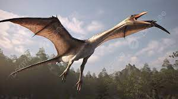

Avian dinosaurs, represented by modern birds, evolved from theropod dinosaurs, a group known for their bipedal stance and carnivorous diet. Their lineage boasts adaptations such as feathers, hollow bones for flight, and unique respiratory systems. In contrast, non-avian dinosaurs comprised a diverse array of species, ranging from massive herbivores like sauropods to fearsome predators like Tyrannosaurus rex. They dominated terrestrial ecosystems for over 160 million years, exhibiting various forms, sizes, and behaviors. While avian dinosaurs survived the mass extinction event that wiped out their non-avian counterparts around 66 million years ago, both groups left an indelible mark on Earth's history, providing invaluable insights into prehistoric life and evolution.
